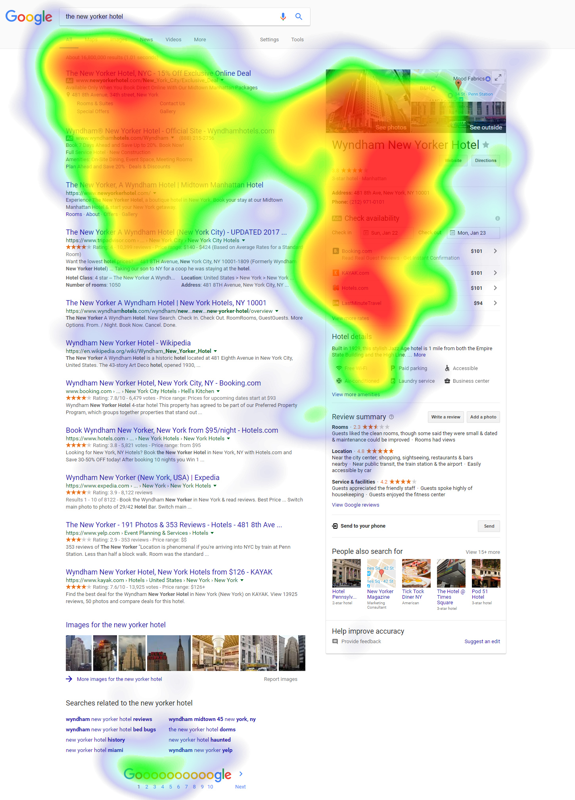

Heat Maps#
What is a Heat Map?#
There are many different types of heat maps. A heat map in its most basic form is a matrix that is shaded or colored. A matrix is a grid created using two variables: one variable makes the rows and the other variable makes the columns. The shading or coloring is determined by the value of the cell in the matrix. Smaller numbers are one end of the shading scale while larger numbers are the other end of the shading scale. Shading may be darker or lighter versions of the same color or may span several colors. See illustration 1 for an example of a basic heat map, also called a highlight table.
Illustration 1: Highlight Table (Simple Heat Map) for Traffic Collisions in Los Angeles#
Illustration 1 presents a highlight table, which is a version of a heat map. This illustration documents the number of traffic collisions in Los Angeles at a particular day and time. The darker rectangles represent more traffic collisions. Unsurprisingly, there are more collisions Monday through Friday during Rush Hour.8
Another type of heat map uses the size of a square or shape in a matrix to demonstrate values. This type of heat map is similar to the highlight table except instead of shading you use size. See Illustration 2 for an example of this type of heat map.
Illustration 2 Another Heat Map Example#
Illustration 2 presents a heat map of the number of financial statement filings by month and industry. The larger boxes represent larger numbers and the smaller boxes represent smaller numbers. The heat map shows that for most industries, companies year ends fall in December (12), however there are some medium sized boxes at March (3), June (6) and September (9), meaning some companies choose different year end dates than the standard December 31 year end.9 Sometimes people combine the highlight table and size heat map if there are multiple variables of interest, this results in different sized boxes that are also different colors. This type of heat map, however, is not as easy to digest.
Other forms of heat maps do not use a matrix but instead use actual maps (discussed in location based maps later) or other visual backgrounds. See Illustration 3 for an example of a heat map that uses a visual background.
Illustration 3 Heat Map of Eye Tracking Software for Google Searches#

Illustration 3 presents a heat map that plots eye tracking software. Specifically the visualization shows where most people look after searching on Google. The red areas are the most common areas and the blue and white areas are less common. This heat map is an example of using a visual as the background instead of a matrix.10
When to Use a Heat Map#
A heat map is used for comparisons when you have more than one variable. Heat maps use two variables as the plot (like an x and y axis) and one variable as the values (e.g., the darkness of the shading or size of the square in the above examples). Heat maps make it easier to compare various points in the plot.
Creating a Heat Map in Tableau#
Watch this video to learn about heat maps in Tableau:
https://mediaspace.illinois.edu/media/t/1_p03z8s47
References#
8 https://www.kaggle.com/cityofLA/los-angeles-traffic-collision-data
9 Compustat